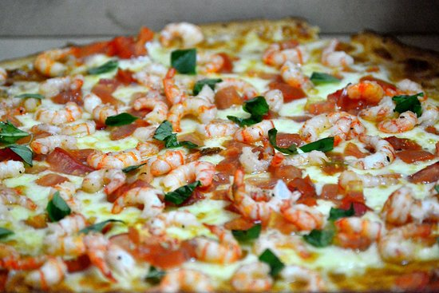

Pizza Gamberetti Especial

La pizza mas sabrosa
Ingredientes
- Harina
- Queso Mozarella
- Camarones
- Salsa de Tomate
- Albahaca
Pasos para la preparacion
- Prepare la masa
- Estire la masa y coloquela en un molde
- Coloque la salsa de tomate
- Agregue el queso
- Aregue los camarones y la albahaca
- Coloque en el Horno a 180Grados por 15 minutos